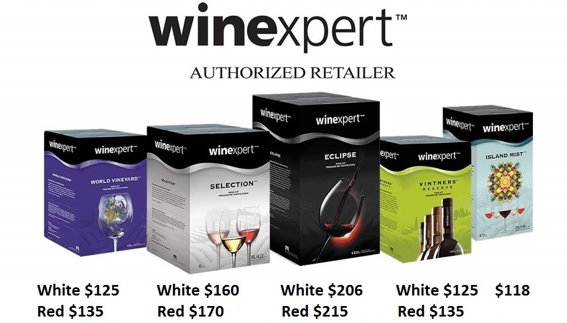

Winemaking Process
Each batch makes 30 bottels and prices include all taxes/fees, corks
(Labels and shrink wrap $6 extra)

Choose a style of wine you like. Unsure? We can assist you with finding a wine that is suited to your taste.
Mix the ingredients and sprinkle the yeast. (The law says you have to!)
Make an appointment to bottle your wine.
Bottle your wine and dress it up with our labels and shrinks.
Let your wine age.
Uncork a bottle, put up your feet, and indulge.
Wine Storage Tips
Here are some wine storage tips to ensure top quality wine:
Do:
Store your wine upright for the first 3 to 5 days.
After that, store your wine on its side in order to keep the cork moist. If you are using synthetic corks, you can store your bottles horizontally or vertically as these corks will not dry out.
Store your wine in a cool, dark place.
Your wine should be stored where the temperature is CONSISTENT… Bright light, movement, and temperature fluctuations can negatively affect the quality of your wine.
Do Not:
Do not constantly turn your wine. Red wines will sometimes dust (leave residue on the inside of the bottle). This is normal. Simply decant your wine.
Do not store your wine directly on a cement floor. Put a thick piece of wood under your wine storage boxes.
Do not store your wine on heated floors.
Food and Wine Pairing
What you are looking for is harmony and balance in your pairing. Wine on its own tastes different than when it is paired with food. If it is complementary, wine can impart its flavours to a dish, thereby giving the food an added layer, or food can lend its flavours to the wine. If they clash, or if one overpowers the other, the experience will under whelm and disappoint and can sometimes lead to flavours that are not present in either, like an unpleasant metallic taste which can result from high tannin content and oily fish. With the right pairing, wine and food can combine to give your palate great pleasure!
Bag in Box
If you’ve taken a look inside a liquor store lately, it probably won’t come as a surprise that boxed wine is currently the fastest growing segment in the commercial wine industry.* Of British Columbia’s 100 best-selling wines, a whopping 50% of the total volume consumed comes from bag in box.
Although price/value is a major contributor to the popularity of the format, boxed wine is not just for economical brands any more. Premium brand bag in box wines are beginning to appear on the shelves of liquor and wine stores; similar to the screw-cap revolution that took place in the early 2000’s. Much like boxed wine, screw capped wine was at one time considered by many as cheap and unrefined; however, screw caps are now widespread throughout the commercial wine industry, including premium wines. History appears to be repeating itself with bag in box format.
Young Wine & Cork believes that our clients deserve the same convenient options for their craft winemaking but at a better price…and for a better product! We are happy to announce that bag in box options are now available.
A dedicated, easy-to-use bag filling station has been created in-store to compliment our two existing bottling stations. Young Wine & Cork is now able to offer the same bag in box convenience while bettering the price of liquor and wine stores by close to 50%. Yes, fifty percent! Five-Zero (See sample consumer cost analysis below). In addition, we have sampled some of the most popular boxed wines available on the commercial market and we can confidently say our 6-week Vintners Reserve & World Vineyard wines are a superior product.
The entire winemaking process remains exactly the same for Bag in Box: Come in to the shop; choose your varietal or style; start your wine; wait 4 to 8 weeks; return to fill your wine bags; take home and enjoy! As you can see, the only difference is you will be filling bags instead of bottles.
Why Unbottle?
Inexpensive: You can make wine that is much better than the most popular brands in the Liquor Store, at nearly ½ the price.
Convenient: User friendly and easy to open. No shrinks, corks, corkscrews required. Easy to store, carry, go, pour, and share.
Less Storage Space: Takes up less space in your home compared to the equivalent in bottles. Easier to store and transport.
Maintains Freshness: Can last 6 weeks in fridge once opened as opposed to an opened bottle that tends to last two or three days after opening.
Environmentally Friendlier: Less packaging per litre produces less waste (no shrink caps, corks or labels ending up in landfills). Cardboard boxes can be recycled with municipal collection and the 4L plastic bags can be returned to your local Encorp Return-It facility. Smaller footprint due to the reduced requirements to produce and transport raw materials required for Bag in Box (cardboard & bags vs. bottles, shrink caps, corks, and labels)
Versatile: You can (un)bottle any style in this format, from 3L to 23L.
Less Work: No cleaning or rinsing of bottles required before or after use. No fuss, no muss.
Cellar Planning
One thing that books and courses on winemaking never seem to teach is how to build up a good cellar of home-made wine. If you’re like most home winemakers, you always seem to be drinking the last bottle of your batch just as it’s really perfectly aged. Here are some tips on how to build and maintain your ideal wine cellar:
1. Determine how much wine you use. This includes your daily glasses with dinner, weekend dinner parties, friends dropping by, birthdays, anniversaries, the holiday weekend, house warming presents, your thirsty brother-in-law, etc. Let’s say that comes to about three bottles per week, all together. Split it up as per your preference for red and white (don’t forget pink, dessert, and champagne as well).
2. Multiply your weekly consumption by 52 (for the number of weeks in a year). For the person consuming and average of three bottles per week, you’d total 156.
3. Add 15-20% for unexpected wine emergencies (there will be one). In our example case this would be 25 or 30 bottles. We’ll round our total to 180 bottles. That works out to six 23-litre (5-gallon/thirty 750ml bottle) batches per year.
4. Make twice your yearly expected consumption, in as short a period as possible, ideally all within one or two months. In this case, it would be 12 batches, all in one fell swoop.
5. Put half of the wine away in your cellar, and forget about it. Drink your young wine, as you need it.
6. At the end of one year start opening those fully aged bottles, and enjoy the tremendous improvement that good cellaring can bring. On the anniversary date of your big batch, make another six batches, all at once, and put them to the back of the cellar. In a year you’ll nearly dislocate your shoulder patting yourself on the back.
The problem with this plan is, while it is very rewarding, you need both the space and the cash to make 12 batches of wine in a very short period of time. Since many of us are not in a position to quite swing such an expenditure, another good strategy is to make two batches of everything, every time you make wine. Bottle one for your use, and put the other in the cellar (away from the prying corkscrew of your thirsty brother-in-law!) For the home vintner, try and stay on a regular schedule to maximize your use of equipment: idle carboys are nobody’s playground. Over the course of a year you should be able to get at least three or four batches salted away for ageing, making a good start on your cellar.
The essence of any cellaring plan is to stash away as many bottles as you can and allow them to age. If you can even take 5 or 6 bottles from each batch you make and squirrel them away for a year, you will quickly have a healthy stock of brilliantly aged wine to drink. The trick is to continually repeat this process – without cheating by taking a bottle here and there!
You’ll also want to keep on top of your young drinking wine. Calculate when this supply is likely to run out and re-order in enough time for the wine to be ready to bottle before you drink your last bottle. For some this may mean starting a new batch every time you bottle. This will help prevent you from dipping into your wine set aside for aging and save you a lot of money by keeping you from those overly expensive commercial bottles of wine you’d end up buying to fill the void.
Weddings
Your wedding is one of the most significant events in your life…
It’s a day you want to be absolutely perfect…
Choose wine that fits the occasion.
Receptions
Take-Home Table Gifts For Your Guests
Bridal Showers
Bachelorette/Bachelor Parties
Gift Openings
Rehearsal Dinners
The process is quick and easy: simply start your wine and come back to bottle. We’ll take special care of everything in between so you can remain worry-free. Weddings are costly so making your own wine is a great way to actually save money. You will receive top quality at a fraction of the price of commercially produced wine from the liquor store. The best part is our prices do NOT inflate when the word “wedding” is mentioned.
Bottling the wine can be an enjoyable experience in itself. A great way to involve your wedding party, family and friends; you can make your bottling appointment a fun and memorable event!
4. Make twice your yearly expected consumption, in as short a period as possible, ideally all within one or two months. In this case, it would be 12 batches, all in one fell swoop.
Choose from a selection of elegant wedding-themed labels that are customizable to include any text you desire, in a variety of fonts. Your wine will look as good as it tastes and will compliment your wedding day.
Please contact us at any time to discuss your wedding wine needs. We look forward to the opportunity to help make your wedding beyond extraordinary.
Frequently Asked Questions
"Can I make wine that is as good as store bought brands?"
Yes. It may help to allow the wine to age after taking it home.
"Is it expensive?"
Not at all. The prices for our wine kits range from $105 to $215. This means you can have a bottle of quality wine for between $3.50 and $7.16. As a general rule of thumb, you are often saving up to half what you would be spending in a wine or liquor store for a comparable bottle of wine, and even more if you are making the top-end, premium wine kits
"How much wine does a kit make?"
With the exception of specialty wines (such as port, ice wine, and sherry), all of our wine kits yield approximately 23 litres (or roughly thirty 750ml bottles) of finished product.
"Can I sample wine before I purchase it? How do I know if it’s any good?"
No. All wine kept on-premise belongs to our clients under contract of bailment. Therefore, the wine is not our property to offer to anyone else, even just a sip. Young Wine & Cork uses Winexpert wine kits because they are the industry leader in quality and performance. We offer a 100% guarantee on all Winexpert products made on-premise. If for any reason you are not satisfied with the wine you have made with us we will work with you to ensure you are happy. You are allowed, by law, to sample your wine at the time of bottling.
"How long will it take?"
We offer you the choice of 4 week, 4-5 week, 6-8 week, and 8-week wine kits. Our 4 week wines (Chai Maison, Island Mist) are light and refreshing and ready to drink immediately after bottling. Our 4-5 week wines (Vintners Reserve, World Vineyard) are made from the finest blend of grape juice and concentrate. They are designed for easy drinking at an early age, typically ready to drink a few weeks after bottling. Our 6-8 week wines (Selection, LE, Specaile withapres) are made from premium quality grape juice blends. They are designed more with aging potential in mind and thus have more flavour, fuller body, and more fragrant aromas. While also drinkable early, these wines vastly improve with a longer aging time (at least 2 to 3 months). Our 8 week wine kits, with 100% varietal grape juice from country and region specific vineyards, The Winexpert Eclipse series has re-defined the quality expectations of the advanced winemaker and the wine kit industry alike. They are another step up from the 6-8 week kits in terms of body, flavour, and aroma, and benefit greatly from 3 to 6 months or more of aging.
"I’ve never done any winemaking on-premise, what do I need to know and how much work is required of me?"
The process of making wine on premise starts with choosing the type of wine you want to make and what quality of wine kit you want to use. The BCLCB requires that the customer own the ingredients and begin the process by sprinkling the yeast into the juice to begin fermentation. We assist you at all times to whatever extent required. After the batch is started, we do all the necessary work during the next four to 8 weeks and the customer has no further obligations until the wine is ready to be bottled. When you arrive for your bottling appointment you will need to sanitize your bottles, fill & cork them, and finish by applying labels and shrink caps if so desired. We provide all the necessary equipment and assistance for you to accomplish this with ease.
"Do I have to come into the shop in person? Can I order over the Phone? Can you start/bottle my wine for me?"
No. Federal and Provincial laws dictate that you are required to purchase up-front, start your kit(s), and return to bottle the finished wine. We are not a licensed winery. We are a licensed On-Premise U-Brew/U-Vin which means we are a facility where you can make your wine. You are authorizing us to do the work involved after the pitching of the yeast and before the bottling of the finished product. The wine never belongs to us. It is always your property held under contract of bailment until such time as it is bottled and taken home with you.
"What determines quality?"
Wine quality is determined by several factors. The first being the quality/availability/accessibility of the raw ingredients contained in a kit. We primarily use Winexpert products as they have extremely high standards, strict quality controls, and access to vineyards around the globe for the raw material used to make their kits. The second is the amount of non-concentrated juice contained in the kit. All wine kits contain some level of concentrated juice in order to increase their shelf life in warehouses and retails outlets. Without concentrate, wine kits would spoil after just a few short months on the shelf.
"What kinds of wines are available?"
Winexpert offers award winning wines from around the world. There is pretty much a wine for everyone. Please see our Products Page for further details.
"Why don’t I recognize all the types of wines you offer and what if I don’t know what I like?"
Many commercially available wines have trademark or legal protection for their names. In order for us to offer similar wines, Winexpert has, in many cases, had to use alternate names for their kits. If you don’t know what you like we can usually determine through questions and discussion what you would enjoy.
"Can I do a half batch of red and a half batch of white?"
Unfortunately, no. The on-premise wine industry and the relevant equipment/tools have been standardized for 23 litres. However, there is nothing stopping you from bringing as many friends, relatives, or neighbors with you at the time of purchase. Each of you can start different wine, set your bottling appointments together, and then split up the wine amongst each other in any way you see fit.
What is the alcohol content?
With a few exceptions, the alcohol level in our wines range from 10% to 15% depending on the brand and varietal. You can pick up a product guide at the shop which contains details on all Winexpert products.
"Can I sample wine before I purchase it? How do I know if it’s any good?"
No. All wine kept on-premise belongs to our clients under contract of bailment. Therefore, the wine is not our property to offer to anyone else, even just a sip. Young Wine & Cork uses Winexpert wine kits because they are the industry leader in quality and performance. We offer a 100% guarantee on all Winexpert products made on-premise. If for any reason you are not satisfied with the wine you have made with us we will work with you to ensure you are happy. You are allowed, by law, to sample your wine at the time of bottling.
"When can I bottle my wine?"
The calibre of wine you purchased determines how long it will take for the fermentation process to complete (anywhere from four to eight weeks). Once fermentation is complete, the wine is ready for bottling. Please note that at Young Wine & Cork we typically hold wine a week or two longer than the instructions dictate as we feel even this short period of extra time allows us to send you home with a better finished product. Due to the heavy volume of wine and clients, you will require a bottling appointment with us which we encourage you to make at the time of purchase. It can be changed in the future if necessary. We endeavor to give you a courtesy reminder call before your appointment.
"I’ve never filled and corked bottles of wine before. How will I know what to do?"
We will take you step by step through the entire process (or refresh you if you have done it before). We are always available for assistance. You will never feel neglected or forgotten at Young Wine and Cork.
"Do my bottles have to be clean?"
Yes. We provide time and equipment for sanitizing already clean bottles. So while your bottles will receive a protective rinse, this will not help if there is mold, sediment, insects, debris, etc. in your bottles. The shop is often very busy with a full schedule of bottling appointments and unfortunately we do not have the space or resources for people to wash dirty bottles in-store. So please bring your bottles in clean. Remember: dirty bottles can ruin your wine! Keeping bottles clean does not have to become a big chore. Soon after you finish a bottle, remove the shrink cap and label, thoroughly rinse the bottle several times, and finally drain it completely. Doing this as soon as you empty a bottle eliminates the need to spend a lot of time cleaning bottles that are left to the last minute. HINT: Store the clean bottles upside down to avoid contamination by foreign objects, dust, insects etc.
"Can I drink my wine right away?"
Yes. All wines are drinkable immediately after bottling; however, how good they will taste that young will depend greatly on what wine and category you purchased. All wines will experience agitation or “bottle-shock” from the filtering and bottling processes. Bottle shock generally settles down after 2-3 weeks. From there, each calibre of wine has a recommended waiting time before drinking. If you are unsure of what your wine criteria is, you can refer to your Winexpert Product Guide or just give Young Wine & Cork a call at 604-402-3333.
"How long will my wine last?"
Young Wine & Cork guarantee all Winexpert products made on-premise for one year. Here are the average lifespans of our wines (with ideal storage conditions):
4 Week White & Red (Chai Maison): 1 Year
4-5 Week White (Vintners Reserve & World Vineyard): 1 Year
4-5 Week Red (Vintners Reserve & World Vineyard): 2 Years
6-8 Week White (Selection & LE): 2 Years
6-8 Week Red (Selection & LE): 3 Years
8 Week White (Eclipse): 2 Years
8 Week Red (Eclipse): 3 Years
These are averages. With proper storage and care, wines can and do last longer. Many of our clients enjoy wine that has been cellared for years. If you are unsure of what your wine criteria is, you can refer to your Winexpert Product Guide or just give Young Wine & Cork a call at 604-402-3333.
"Can I store my wine at Young Wine & Cork?
Sorry, no. Provincial regulations state that once your wine is ready, you need to bottle it and remove it to your home within a reasonable length of time (30 days). Once the actual bottling is completed, the wine must be immediately removed from our premises. This is required by law as well as determined by the limited availability of containers and space in the shop.
Are Winexpert wine kits dry or sweet?"
Our wine menu has sweetness indicators next to the wine names. Most of our wines have a dry finish but we can adjust the levels to your taste. Just ask.
"What are Tannins?"
Tannin comes from the skins, seeds, and stems of the grapes, and also from wood. These are the culprits when you taste a wine that gives you an astringent, mouth-drying sensation or causes your mouth to pucker. Tannins give wine its longevity and character. They are also found in strong tea.
"What about wine with food?"
The fuller flavoured the food, the more full-bodied the wine should be. A simply prepared chicken can match well with a light bodied white wine. If you add a rich cream sauce, then a medium to full-bodied white may be preferred. Learn more with our Wine & Food Pairing Page.
"What about wine with cheese?"
Similar to how milk softens tea, cheese serves to round the tannic tastes of wine. Brie with sparkling wine is a good combination. Blue cheese overpowers most wines except dessert wines.